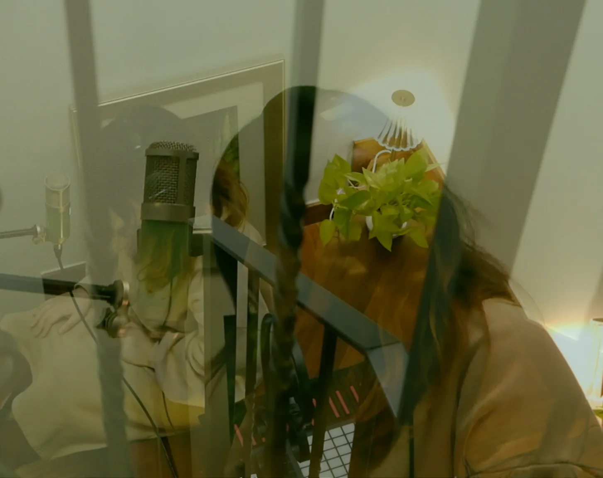

The Freelancer, Never Feeling Free
Although I decided to study music at 15 and majored in Popular Music from the age of 18, when I returned to South Korea after graduation, I chose to work with children, teaching English. This was largely due not only to the importance of language expansion but also to my insecurity—I wanted music to remain a source of joy, not a means of making a living, especially considering Korea's demanding work culture and low wages, often associated with the music industry. As a result, I kept my music as a personal outlet for creativity; however, I found myself increasingly lacking the time to pursue it.
After three years, and through the COVID outbreak, I started working for a company specialising in AI voices. This transition was driven by my desire to engage my creativity. Compared to working as a full-time academy teacher, the company offered more flexibility, including remote working options and flexible hours, allowing me more time for creative pursuits.
Two years later, last April, I eventually left the workplace because I realised my creativity needed more space in my life—more room for study, exploration, and growth. In this fast-paced world, spending five years mostly away from the music industry left me feeling somewhat out of touch, particularly after releasing a single last year while employed.
Recently, with no job and no daily obligations imposed by external factors, I began to reflect: What would I actually feel? The process of understanding freedom—and truly feeling free—took me a long time. From this chaotic process and emotional challenge, I determined to write an original piece of music that embodies my feelings—turning ideation into creation. It is deeply personal, yet universally resonant.
For the intro, I intended to create the sounds that evoke yearning and longing, like the image of gazing outside from within a cage, with the later part of the song becoming dreamy and sweeping, while maintaining an ambiguous vibe to some extent. This video of my live performance has not been edited for pitch or rhythm, but only mixed afterward.
Lyrics
I used to feel secure with some fences blocking around me
stuffier yet still safer by following the repetitive routines within the zone
Then it was time to leave the nest and challenge myself
for the vast chances in spite of higher risk
Thus doing my best, unfolding the wings to glide
but the freelancers're never feeling free
I wanted to be one of them but this freelancer's never feeling free
Are the free-range eggs actual free, bought at a higher price?
The ‘free’ can be labeled with its price
They said focusing on something I want can make myself free
the free status to stick to the things I love
Then without any circuit or goal line existing in the daily race
I was the one standing nowhere,
'cos the freelancers're never feeling free
I wanted to be one of them but this freelancer's never feeling free
Are the free-range eggs actual free, bought at a higher price?
The ‘free’ can be labeled with its price
Spread wings
soaring through the clouds
In the blurry sight
but indicating my own direction
Realise there's no need to stand or run to the goal line
as my feet were beyond the ground
The freelancers're never feeling free
I wanted to be one of them but this freelancer's never feeling free
We, the breed of panthers, no waiting or fighting to be sold higher
as the ‘free’ can be indispensable